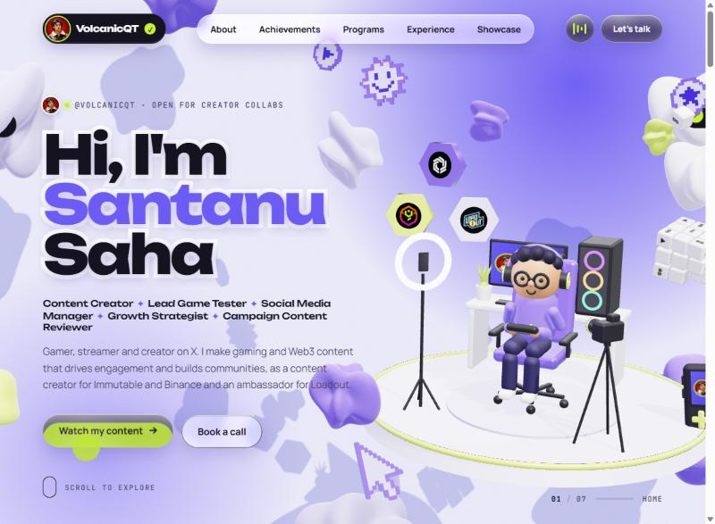
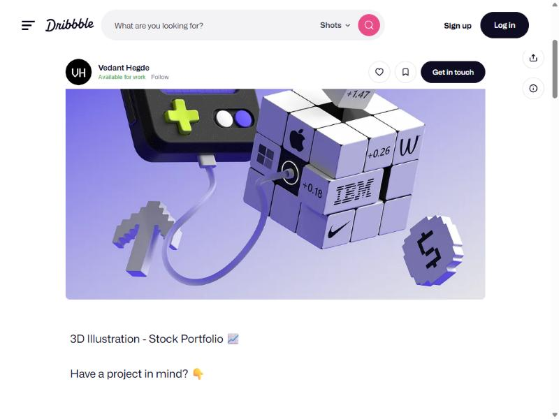
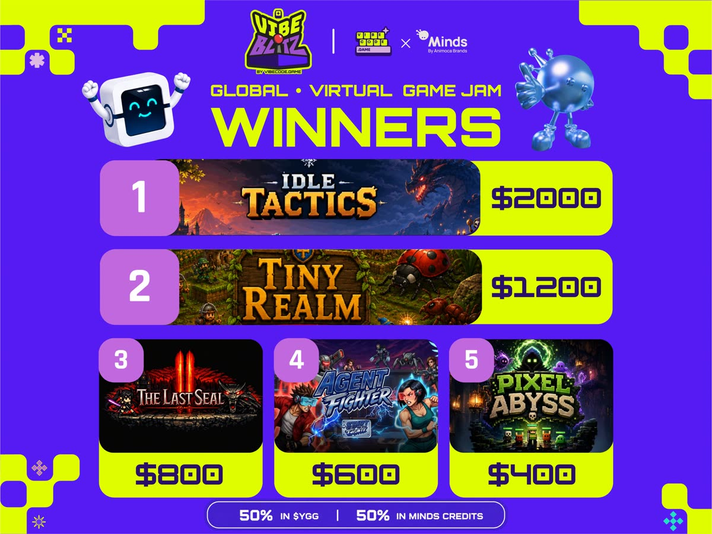
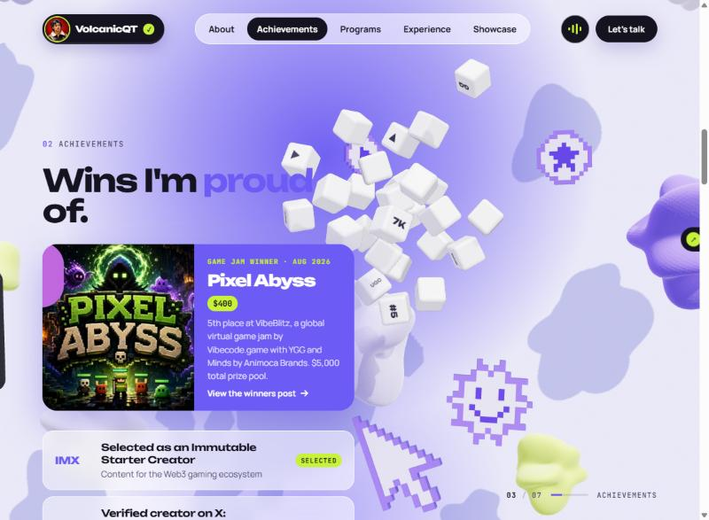
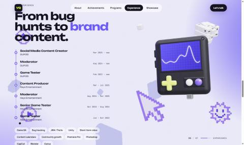
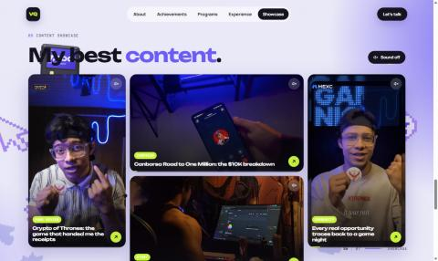
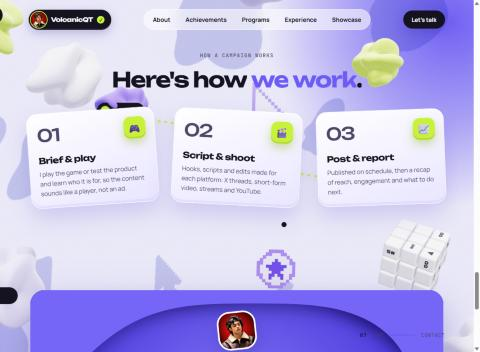
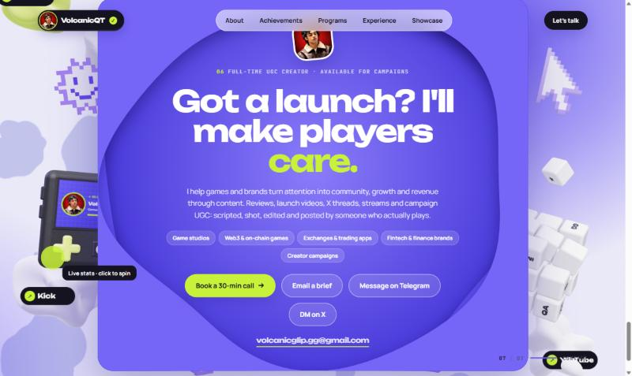

VolcanicQT · Santanu Saha · Build guide
Every language, library, 3D object, animation, timing, colour, font size, effect and asset used to build the portfolio at volcanicqt.vercel.app, plus how to edit, run and redeploy it.

A single-page portfolio for Santanu Saha (VolcanicQT), a full-time UGC and gaming content creator, Web3 creator-program member, social media manager and lead game tester. The page is a fixed, full-screen WebGL canvas (Three.js) behind normal HTML sections. As you scroll, the 3D objects glide between a hand-designed layout for each section. There is no build step: plain files served as a static site.
Design references: Vedant Hegde's Dribbble shot "3D Illustration – Stock Portfolio" (glossy periwinkle and lime plastic, cube of logo tiles, black handheld, pixel-art icons); Luis Bizarro's Awwwards site bizar.ro (real-time 3D, one object per project); a green clay "product designer" layout (fuzzy blobs, logo strip, 3-step process cards, layered paper-cut CTA); and a 3D clay character-in-armchair illustration (for the creator studio).


| Language / tech | Where | Used for |
|---|---|---|
| HTML5 | index.html | Page shell, sections, nav, loader, SVG refraction filter, import map |
| CSS3 | style.css | Layout (flex/grid), design tokens, glass effects, keyframe animations, responsive rules |
| JavaScript (ES2022 modules) | main.js, ui.js, scene.js, data.js | Boot/loader, scroll mapping, DOM building, video/music logic, the whole 3D scene |
| WebGL (via Three.js) | scene.js | Real-time 3D rendering, PBR materials, shadows, environment lighting |
| Canvas 2D | scene.js | Live device/monitor screen, text labels on cube tiles, link pills, felt and speckle textures |
| SVG | index.html, ui.js | Liquid-glass refraction filter, icons, process curve, paper-cut CTA layers |
| Node.js | serve.mjs | 21-line local static server for previewing |
| JSON | .vercel/project.json | Vercel project link (kept out of the repo) |
| Shell / ffmpeg / yt-dlp | tooling | Downloading and encoding videos and thumbnails |
| earshot (Python) | tooling | Rendering the background music loop |
| Library | Version | Loaded from | Licence |
|---|---|---|---|
| three.js (+ RoundedBoxGeometry, RoomEnvironment, BufferGeometryUtils) | 0.169.0 | cdn.jsdelivr.net (import map) | MIT |
| Lenis (smooth scroll) | 1.1.13 | unpkg.com | MIT |
| Google Fonts: Unbounded, Manrope, JetBrains Mono | — | fonts.googleapis.com | SIL OFL |
site/ ├─ index.html 81 lines · shell, nav, sections, SVG filter, import map ├─ style.css ~550 lines · tokens, layout, effects, animations, responsive ├─ main.js ~100 lines · fonts → scene → loader → Lenis → scroll progress → frame loop ├─ ui.js ~360 lines · builds every section from data.js, reveals, counters, video + music, cursor ├─ scene.js ~800 lines · the entire Three.js world ├─ data.js all text, links, stats, programs, videos (edit this file) ├─ serve.mjs local preview server: node serve.mjs → http://localhost:5173 └─ assets/ ├─ avatar.jpg, banner.jpg, me.png X avatar/banner, Canva cutout (cutout no longer shown) ├─ logos/ immutable, ygg, loadout, glip, binance, vibecode, cot, blackveil ├─ jam/ pixel-abyss.jpg, vibeblitz-web.jpg ├─ work/ 5 YouTube/stream thumbnails from the Canva deck ├─ videos/ 4 showcase videos (mp4) + poster frames └─ audio/ chill.ogg + chill.m4a (background music loop)
Boot order: main.js waits for the fonts (max 2.5 s), builds the DOM (buildUI), builds the 3D scene (createScene),
animates the 0–100 % loader, then reveals the page, starts the intro animation and the text reveals. One requestAnimationFrame loop drives
Lenis, the scene and the UI each frame.
| Token | Value | Use |
|---|---|---|
--ink | #15131F | Text, dark buttons, device body |
--ink2 | #4B4868 | Secondary text |
--lav | #ECEBFB | Page background |
--purple | #6C5CF5 | Accent words, chair, 3D purple plastic (#6252F2) |
--purple-d | #4A3BDC | Deep purple: CTA layers, gradients |
--lime | #C8F23A | Highlights, tags, D-pad, rings, buttons |
| 3D lavender | #C4BEFA / #BAB1FB | Pixel icons, clay blobs |
| 3D white | #F2F1FB | Cube tiles, desk |
| Background blob | radial #7363F6 → transparent | Big soft purple glow, moves with scroll |
| Role | Font | Size (fluid) | Weight / spacing |
|---|---|---|---|
| Hero title (h1) | Unbounded | clamp(3.2rem, 7.6vw, 8.4rem) | 800 · −0.05em · line-height 0.92 |
| Section title (h2) | Unbounded | clamp(2.2rem, 4.4vw, 4.6rem) | 700 · −0.045em |
| Contact title | Unbounded | clamp(2.4rem, 4.8vw, 5rem) | 700 |
| Card titles | Unbounded | 0.92–1.6rem | 600–800 · −0.02 to −0.04em |
| Body / lead | Manrope | clamp(1rem, 1.2vw, 1.15rem) | 400 · line-height 1.65 |
| Kickers, tags, HUD | JetBrains Mono | 0.66–0.78rem | 500–700 · +0.08 to +0.14em, uppercase |
| Loader number | Unbounded | clamp(4rem, 12vw, 9rem) | 800 |
| Thing | Value |
|---|---|
| Section padding | 16vh 6vw 12vh (desktop) · 12vh 20px 10vh (mobile) |
| Text column | min(560px, 44vw), left or right per section |
| Radii | Pills 99px · cards 18–26px · video tiles 22px · CTA panel 34px |
| Card glass | rgba(255,255,255,.55) + backdrop blur 14px + 1px white border |
| Breakpoints | 1024px (narrower column) · 760px (mobile: frosted cards, single-column grids, 3D scaled ×0.62) |
| Main easing | cubic-bezier(.2,.85,.2,1) (fast out, soft settle) |
| # | Section | Content | What the 3D does |
|---|---|---|---|
| 01 | Hero | Name, roles, intro, 2 CTAs | Creator studio diorama in front; device, cube and icons frame the edges |
| — | Trusted strip | 8 clickable brand logos | Transition |
| 02 | About | Bio + 3 counting stats | Handheld moves front-left (×1.45), its screen shows live stats |
| 03 | Achievements | Featured Pixel Abyss card + 5 wins | Cube explodes into floating tiles; hover a tile for a win |
| 04 | Programs | 6 program cards + marquee | Pixel star, play coin, smiley and cursor come forward big |
| 05 | Experience | 7-role timeline + skills | Handheld on the right showing a live chart |
| 06 | Showcase | 4 autoplay videos + 4 thumbnails | Objects move to the screen edges |
| — | Process | 3 tilted step cards | Transition |
| 07 | Contact | Layered UGC CTA panel, 4 contact buttons, socials | Device and cube return at the sides |





| Setting | Value |
|---|---|
| Renderer | WebGLRenderer, antialias, alpha; pixel ratio ≤ 2 (≤ 1.5 on mobile); sRGB output |
| Tone mapping | ACES Filmic, exposure 1.05 |
| Environment | RoomEnvironment through PMREM (soft studio reflections), intensity 0.9 |
| Camera | Perspective, FOV 30°, at z = 24; follows the pointer (x ±0.7, y ±0.45), eased 1 − e^(−3·dt) |
| Key light | Directional white 2.3 at (7, 11, 14), soft shadows (PCFSoft, 2048² map, bias −0.0004) |
| Rim light | Directional #9D90FF 1.6 at (−10, 4, −6) |
| Fill | Hemisphere white / #7D70F0, 0.55 |
| Shadow wall | 240×240 plane at z = −12 with ShadowMaterial #2A1D9E, opacity 0.17 |
| Ring light | PointLight #F1EDFF, intensity 6.5 ± 0.6 (pulsing), range 7 |
| Name | Type | Values |
|---|---|---|
| White plastic | MeshPhysical | #F2F1FB, roughness 0.3, clearcoat 0.7 (0.22 rough) |
| Speckled black | MeshPhysical + canvas speckle map | roughness 0.62, clearcoat 0.35 (3,200 random flecks on 256² canvas) |
| Lime / purple | MeshPhysical | #C8F23A / #6252F2, roughness 0.28–0.3, clearcoat 1 |
| Felt clay (blobs, hoodie) | MeshPhysical + sheen + bump | roughness 0.92, sheen 1 (0.55 rough), 14k-dot felt bump map, bumpScale 1.2 |
| Glow (ring light, RGB fans, screens) | MeshBasic, toneMapped off | Unlit so they read as light sources |
| Object | How it's made |
|---|---|
| Creator studio (hero) | ≈120 primitives: platform (r 5, lime rim), rug, desk, monitor showing the live screen, keyboard, mouse, plant (7 cones), gaming PC with glass panel and 3 spinning RGB fans (hue cycles), gaming chair (seat, backrest with lime stripe, headrest, armrests, 5-star base + wheels), character (capsule body and limbs, sphere head, hair cap + 5 fringe tufts, glasses, smile, headphones with lime rings, controller), ring light on a tripod, camera on a tripod with blinking REC light, 3 hexagon badges with Immutable / YGG Play / Loadout logos. Whole diorama turned −0.5 rad for a 3/4 view. |
| Logo cube | 26 RoundedBox cubies (0.94, radius 0.13) in a 3×3×3 with one popped out; canvas-text decals ("IMX", "#5", "YGG", "28K", "UGC"…) on 45–75 % of outer faces (seeded random) |
| Floating cubie | Lime "#5" top face, "GG" front, ★ side; spins on two axes |
| Handheld device | Speckled body 3.4×3.7×0.75, bezel, 512×358 canvas screen, lime D-pad, white + purple buttons, side keys, chrome USB plug |
| Pixel icons | Extruded pixel art: each pixel a box (0.2 units), merged per material: scalloped smiley badge, star coin, play coin, cursor arrow; edges purple, fill lavender, symbol deep ink |
| Clay blobs | Icosahedron (detail 22) displaced by 4 sine waves per vertex; 5 shared shapes, 4 colours; 6 around the studio, 8 in the background |
| Link blobs | 5 background blobs with a dark "↗ label" sprite: Telegram, X, YouTube, Book a call, Kick; click opens the link |
| Cable | TubeGeometry along a 4-point Catmull-Rom curve from the device plug to the cube, rebuilt each frame (used in the contact layout) |
Three modes blended by a weight (0 = chart, 1 = stats, 2 = profile): an animated line chart (sum of 3 sine waves + a sharp spike, white 7px line with glow on a 32px grid), a cycling stat (changes every 2.6 s, auto-shrinks to fit), and a profile card (circular avatar with lime ring, "● ONLINE", VolcanicQT, progress bar).
Each of the 7 sections has an anchor (its top + half the extra height). The scroll position becomes a continuous progress
p from 0 to 6; inside each gap the step is eased with smoothstep(0.1, 0.9, t), so objects hold still while you read and glide between sections.
Every object has a position, rotation and scale per section (the DESK table); the current target is a linear blend of the two neighbouring layouts.
// main.js: scroll position → progress p const progress = (y) => { for (let i = 0; i < anchors.length - 1; i++) if (y < anchors[i + 1]) return i + smooth(0.1, 0.9, (y - anchors[i]) / (anchors[i + 1] - anchors[i])); return anchors.length - 1; }; // scene.js: every object eases toward its target (frame-rate independent) const damp = (a, b, k, dt) => lerp(a, b, 1 - Math.exp(-k * dt)); // k = 4.2 for objects
| Motion | Value |
|---|---|
| Smooth scroll (Lenis) | lerp 0.085, wheel ×0.9; nav jumps take 1.6 s |
| Object follow | exponential damping k = 4.2 (position, rotation, scale) |
| Intro | each object pops in with easeOutBack (overshoot 1.5) over 1.1 s, staggered 0.09 s; rises 2.5 units |
| Idle float | bob ±0.16 at 0.9 rad/s; tilt ±0.05 / ±0.09 / ±0.03 rad at 0.42–0.55 rad/s |
| Rubik turns | one random layer turns 90° in 0.75 s (cubic in-out), every 1.5–2.5 s; paused while exploded |
| Cube explode | positions ×2.5 + random jitter (±0.75), each tile tumbles ±1–3 rad; damping k = 3 |
| Click spin | +360° on the clicked object, damped k = 3.2; clicking the cube forces a turn |
| Hover lift | cube tile pops 0.3 out; other objects scale +6 %; link blobs +12 % |
| Scroll tilt | world tilts with scroll speed (velocity × 0.012, max ±0.35), eased k = 4 |
| Background blobs | parallax speed 3.4 × depth, wrap around a 26-unit band; slow spin |
| Studio | fans spin 6–10 rad/s; RGB hue cycles every 12.5 s; head nods (2.2 Hz) and turns (±0.22); REC blinks 0.8 Hz; hex badges bob ±0.15 |
| Headline reveal | each word slides up 110 % and un-rotates 4° in 1.1 s, 0.07 s per word |
| Fade-ups | 28px up, 0.9–1 s, staggered 0.06 s within a section |
| Counters | count up over 1.8 s, ease-out quart |
| Marquee | program names scroll every 32 s, tilted −2° |
| Headline shadow | soft purple shadow drifts on a 6 s loop |
| Loader | 0 → 100 % counter, then the screen wipes up (clip-path) in 1.1 s |
| Music button | 4 equaliser bars bounce 5 → 18px on a 1 s loop |
| Effect | Recipe |
|---|---|
| Liquid-glass buttons | Same recipe as the liquid-glass skill: backdrop-filter: blur(10px) saturate(1.8) brightness(1.06), a top-to-middle white sheen,
a tint (dark 0.72, white 0.24–0.38, lime 0.8), a bright 1px top rim, inner edge glows, a drop shadow, and a pointer-following radial highlight
(soft-light). Chrome/Edge add real refraction with the #lg-refract SVG filter (fractal noise 0.011/0.022, blur 2, displacement 22). |
| Headline outline | -webkit-text-stroke: 0.14em #fff with paint-order: stroke fill (stroke behind the letters) + drifting shadow |
| Paper-cut CTA | 4 SVG layers, each a rectangle with a wobbly hole (48-point closed curve with 3- and 5-lobe waves), colours #3A2BB8 → #7666F7, drop shadows; layers shift 6–26px with the mouse for parallax |
| Process curve | dashed lime SVG path (2 / 14 dash) with a glow behind three cards tilted −4°, 3°, −2° |
| Glass cursor | system cursor + a 26px glass bubble (blur 3px, white rim, highlight) following at 30 % per frame |
| Grain | SVG fractal-noise overlay at 7 % opacity, multiply |
| Background glow | two blurred radial gradients that drift with scroll progress |
| Asset | Source | Processing |
|---|---|---|
| 4 showcase videos | Santanu's own X posts (yt-dlp) | ffmpeg H.264 CRF 28, 30 fps, 1280 wide (landscape) / 720 wide (vertical), AAC 96k, faststart; poster frame at 3 s |
| Video sound | — | Autoplay muted while ≥ 15 % visible; after the first click the most visible video plays at 12 % volume; speaker buttons pin one |
| Background music | earshot bed/warm (electric piano, F3), rendered locally | 62.6 s seamless loop at −20 LUFS; ogg + m4a (Safari); plays at 16 % volume, ducks to 2.5 % while a video has sound; starts at once if allowed, otherwise on the first click/tap/key |
| Thumbnails, deck images | Santanu's Canva deck | Cropped and scaled to 960px with ffmpeg |
| Program logos | Canva deck + official X avatars | Used as-is (150–400px); trademarks of their owners |
| Pixel Abyss art | @Vibecode_game winners post | Tile cropped from the 2048×1536 graphic |
| Where | What happens |
|---|---|
| 3D objects | Hover: tooltip + hand cursor; click: spin. Cube tiles show a win from the list. |
| Link blobs | Hover: "Open X ↗"; click opens Telegram / X / YouTube / Calendly / Kick in a new tab |
| Nav | Smooth-scrolls to sections; the current section is highlighted; HUD shows 01/07 + progress bar |
| Buttons | Lime fill slides up on hover; glass highlight follows the pointer; press shrinks to 97 % |
| Cards | Achievements slide right 12px; programs lift and tilt −1°; steps straighten and rise 8px |
All words, numbers and links live in data.js. Change them and refresh; nothing else needs editing.
export const DATA = {
firstName: 'Santanu', lastName: 'Saha', brand: 'VolcanicQT', handle: '@VolcanicQT',
roles: ['Content Creator', 'Lead Game Tester', 'Social Media Manager', 'Growth Strategist', 'Campaign Content Reviewer'],
stats: [{ value: 28000, suffix: '+', label: 'Posts on X' }, ...],
achievements: [{ big: '#5', title: 'VibeBlitz game jam: Pixel Abyss', org: '...', tag: 'Winner' }, ...],
programs: [{ name: 'Immutable', role: 'Creator Program', logo: 'assets/logos/immutable.png', url: '...' }, ...],
videos: [{ src: 'assets/videos/thrones.mp4', ratio: 'v', title: '...', url: 'https://x.com/...' }, ...],
calendly, telegram, email, socials, cta, process, trusted, blobLinks, music, cubeLabels, tips ...
};
Add a showcase video: download it (yt-dlp), encode with the ffmpeg settings above into assets/videos/, then add an entry to videos.
# preview locally node serve.mjs # → http://localhost:5173 # deploy to the live site (Vercel, free Hobby plan) npx.cmd vercel deploy --prod --yes # → https://volcanicqt.vercel.app
Files kept out of uploads: .env*, .vercel/, serve.mjs and README.md (.vercelignore).
Credits: Three.js and Lenis (MIT); Unbounded, Manrope, JetBrains Mono (SIL Open Font License); background music rendered with earshot (free to use, no credit needed); program logos and brand names belong to their owners and are shown to describe real collaborations; all videos, thumbnails and photos are Santanu Saha's own content.
Santanu Saha · VolcanicQT · volcanicglip.gg@gmail.com · x.com/VolcanicQT